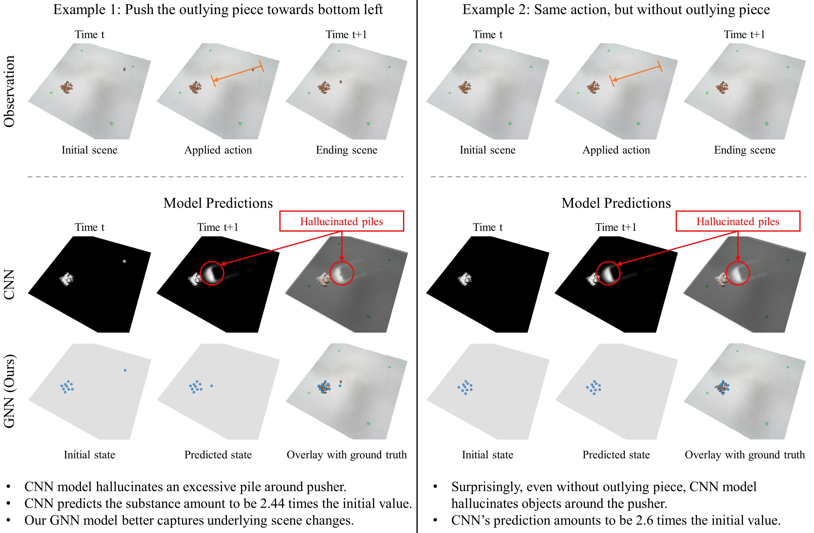
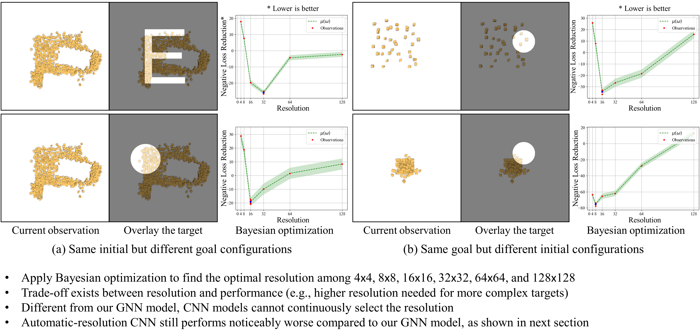
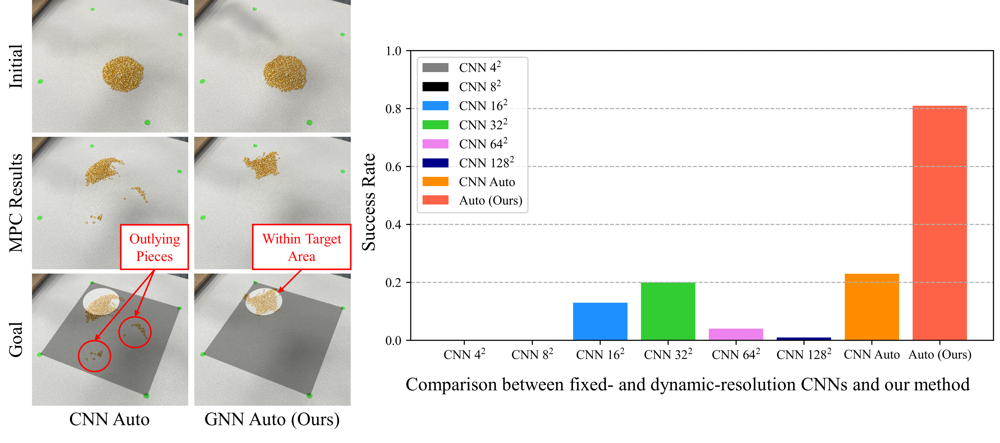

Rebuttal
The main issue is the lack of an ablation study to justify the use of GNNs. We conducted additional experiments to compare GNNs with CNNs. We organize our results as following:
-
In Section 1, we demonstrate that GNNs are better at modeling underlying changes in the scene, whereas CNNs tend to hallucinate.
-
In Section 2, we show there exists empirical trade-offs between efficiency and effectiveness when using CNNs, which suggests that the dynamic choice of input resolution is not unique to GNNs.
-
In Section 3, we compare our model with several fixed-resolution CNN baselines and a CNN baseline augmented with the resolution regressor both quantitatively and qualitatively. Dynamic-resolution CNN outperforms all fixed-resolution counterparts but is still noticeably worse than our dynamic-resolution GNN framework.
1. Hallucination of CNN

2. Trade-off for CNN resolutions

3. Dynamic-Resolution CNN
Fixed-resolution CNN does not provide satisfactory performance.

Although dynamic-resolution CNN outperforms fixed-resolution CNN, it is still worse than our dynamic-resolution GNN framework.
